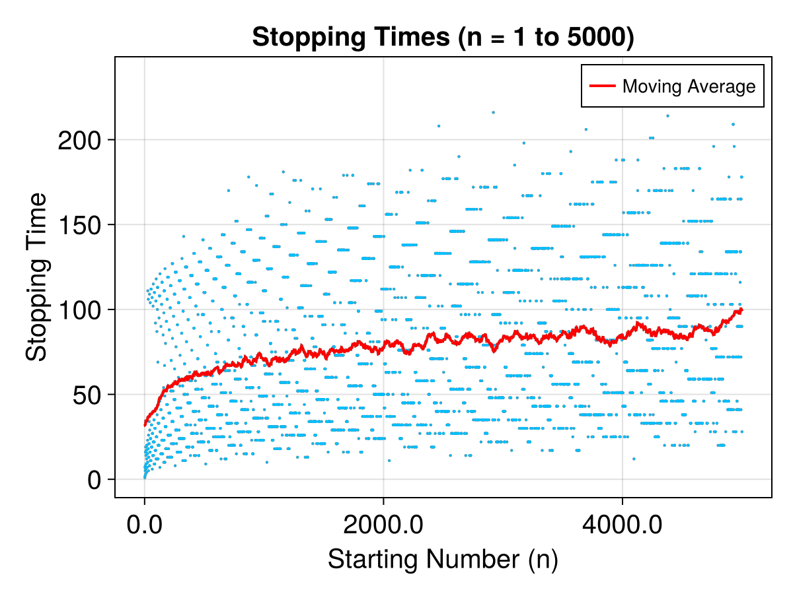
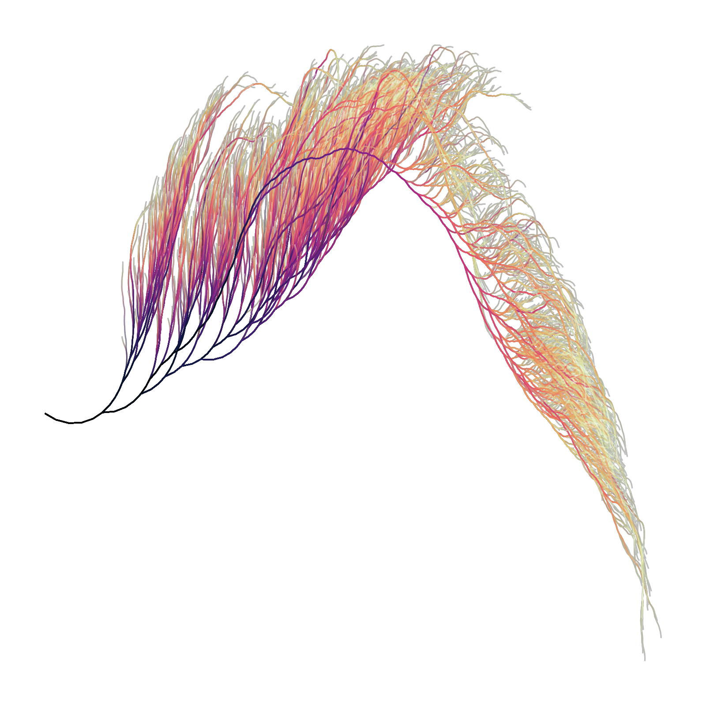
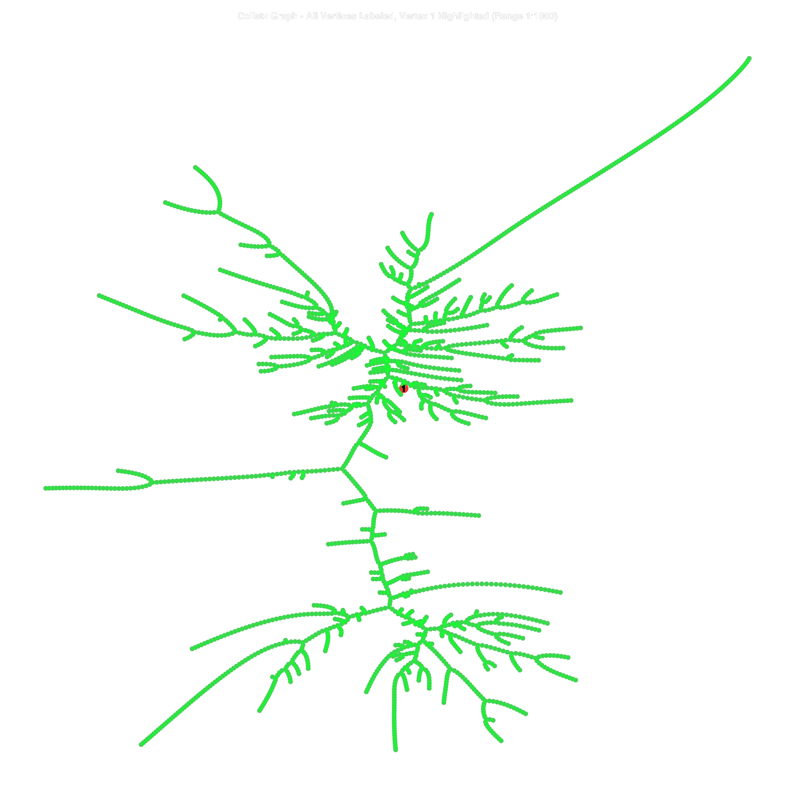
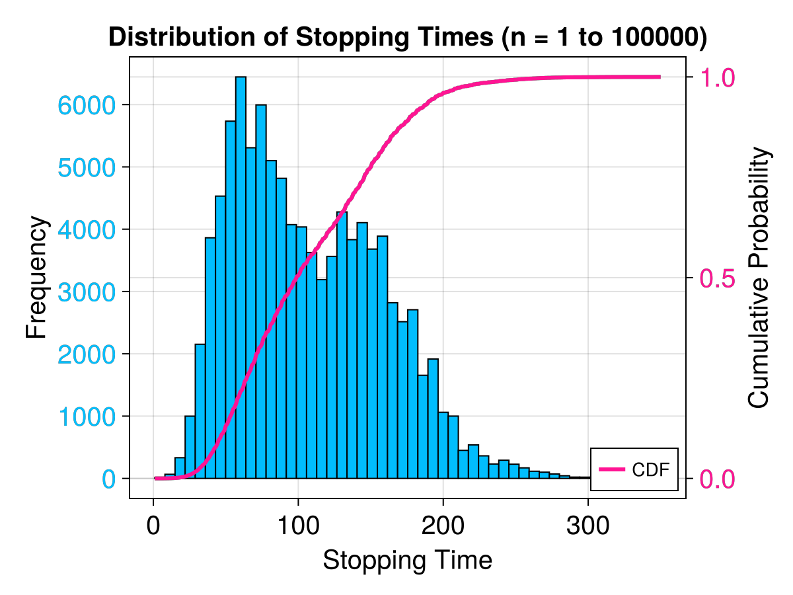

using CollatzConjecture
test_sequences, shared_vertices = test_collatz_connectivity(10)
test_sequences
shared_vertices
Dict{Int64, Vector{Int64}} with 22 entries:
5 => [3, 5, 6, 7, 9, 10]
16 => [3, 5, 6, 7, 9, 10]
20 => [7, 9]
52 => [7, 9]
28 => [9]
8 => [3, 5, 6, 7, 8, 9, 10]
17 => [7, 9]
1 => [1, 2, 3, 4, 5, 6, 7, 8, 9, 10]
22 => [7, 9]
6 => [6]
11 => [7, 9]
9 => [9]
14 => [9]
3 => [3, 6]
7 => [7, 9]
40 => [7, 9]
34 => [7, 9]
4 => [3, 4, 5, 6, 7, 8, 9, 10]
13 => [7, 9]
⋮ => ⋮
using CollatzConjecture
plot_stopping_times_scatter(5000)
using CollatzConjecture
using CairoMakie
CairoMakie.activate!()
# Create and display the visualization
fig = create_collatz_visualization(n=5000, print_numbers=true)
fig
using CollatzConjecture
using CairoMakie
CairoMakie.activate!()
figX = collatz_graph_highlight_one(1000, vertex_size=10, highlight_size=20, label_fontsize=10)
figX[1]
using CollatzConjecture
plot_stopping_times_histogram(100000)
